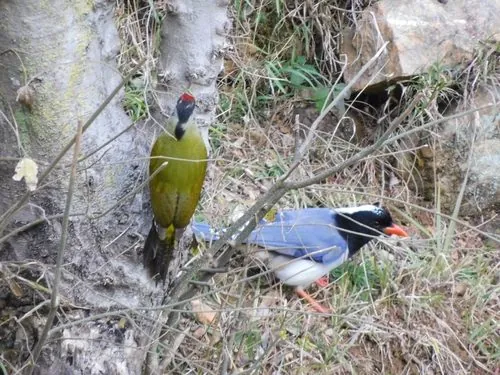

鸟类 · 动物界
红嘴蓝鹊 Urocissa erythroryncha

羽色华丽的鸦科鸟类，蓝紫背羽配鲜红嘴脚，黑色头颈与白色后颈形成对比。尾羽极长且具白端，常成群在林间滑翔。
- 分类
- 门脊索动物门纲鸟纲目雀形目科鸦科属蓝鹊属
- 栖息环境
- 低山常绿阔叶林、针阔混交林、竹林、果园、公园与村落林缘，偏好有高大乔木的环境。
- 地理分布
- 喜马拉雅山脉至中国东部、南部及中南半岛，包括华北南部、华东、华南和西南。
- 保护级别
- IUCN 红色名录列为无危（LC）；中国列入“三有”陆生野生动物名录。
物种志
红嘴蓝鹊体长约五十四至六十五厘米，其中尾羽可占体长一半以上，体重一百五十至二百一十克。头部、颈部和前胸黑色，后颈至头顶有一块白色斑；上体蓝紫色，下体灰白至淡蓝，尾羽长而呈阶梯状，末端有宽阔白斑。喙和脚鲜红色，虹膜橙红。雌雄羽色相似，雄鸟尾羽略长。
它栖息于低山常绿阔叶林、混交林、竹林、果园与村落林缘，常成数只至十余只的群体活动，在林间作波浪状滑翔，长尾拖在身后十分醒目。食谱广泛，包括昆虫、果实、种子、鸟卵和雏鸟，也会捕食小型鼠类与蜥蜴。繁殖期在树上筑碗状巢，每窝产卵三至六枚，群体成员会协助警戒。红嘴蓝鹊分布于喜马拉雅山脉至中国东部和南部、中南半岛，是南方山地常见鸟类，列入“三有”名录。
形态与习性
- 体长54–65 厘米（含超长尾羽）
- 体重150–210 克
- 食性昆虫、果实、种子、鸟卵与小型动物
- 繁殖树上碗状巢，每窝 3–6 枚
- 特征蓝紫背羽、红嘴红脚、白色尾端
- 保护级别IUCN 无危；“三有”动物
趣味知识
- 尾羽比身体还长，滑翔时像一条飘动的蓝色缎带。
- 常成群活动，发现敌害会集体鸣叫驱赶。
- 红嘴红脚与蓝紫羽色搭配，是南方最上镜的鸟之一。